Guides
The Art, Science, and Local Knowledge Behind Portrait Photography in Maui
Twenty-five years of field knowledge, shared.
For more than 25 years, our family has photographed families, couples, children, and weddings across Wailea, Makena, and South Maui.
During thousands of portrait sessions, we have learned that creating a meaningful photograph requires much more than choosing a beautiful beach. It requires an understanding of light, weather, wind, tides, color, optics, family dynamics, and the quiet moments that transform a photograph into a memory.
The Maui Atlas is where we share that knowledge.
This is not a traditional photography blog. It is a growing reference devoted to the art and engineering of portrait photography in Maui—from choosing the right beach and time of day to understanding professional lighting, Leica optics, Kodak film, natural skin tones, and the craft behind timeless family portraits.
Plan your session
Beaches, timing, what to wear, the tides, and where to eat afterwards.

Best Beaches in Maui for Family Pictures
Mokapu, Maluaka, Kanahā and Keawakapu compared for light, wind, crowds, access and the families each beach suits best.
Read the guide
Best time of day for a family beach photo in Wailea
Golden hour, sunrise, and why midday sun in Wailea is the one window we don't recommend.
Read the guide
What to wear for Maui photos
Field-tested guidance on colors, fabrics, coordination, wind, footwear, and comfortable clothing that photographs beautifully beside Maui’s sand and ocean.
Read the guide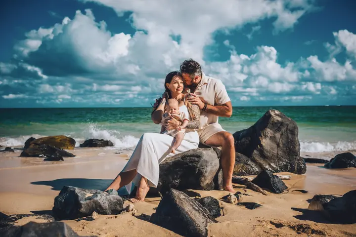
Wailea vs. Kihei vs. Makena: choosing your location
Water color, crowds, and scenery compared across South Maui's three main photo-session locations.
Read the guide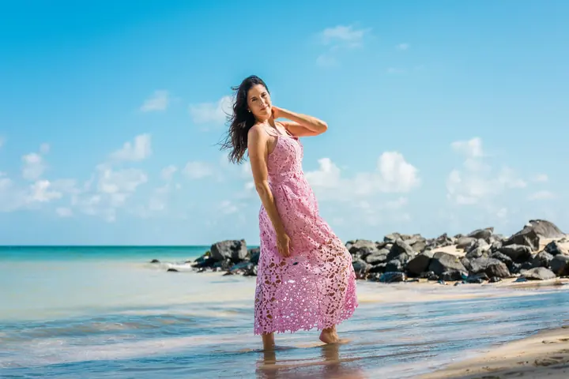
Tides & sunset times
Tide highs and lows, plus sunrise and sunset times, for any date during your Maui trip.
Read the guide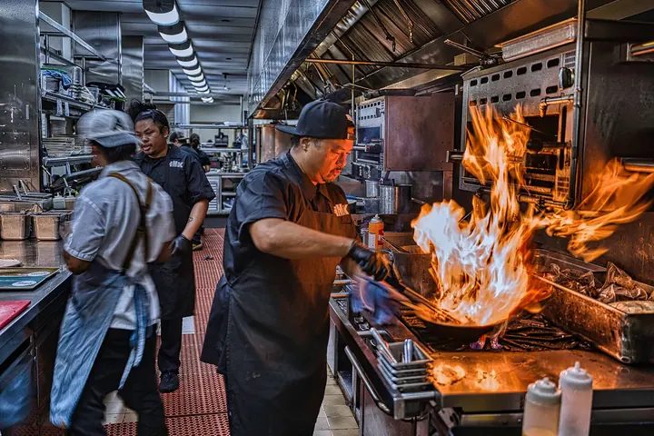
Where to eat after your session
Our personal, local guide to post-shoot dining—from fine oceanfront Italian to casual fish tacos, craft breweries, and video reviews.
Read the guideWhere to park
Exact lots, walking paths and meeting points for every beach we photograph.
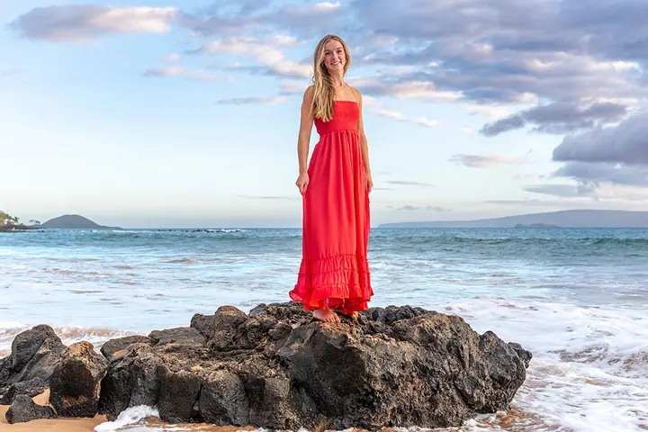
Where to park for a sunset session at Mokapu Beach
Public parking, the walk past the Andaz, map links and practical preparation notes for a Wailea sunset session.
Read the guide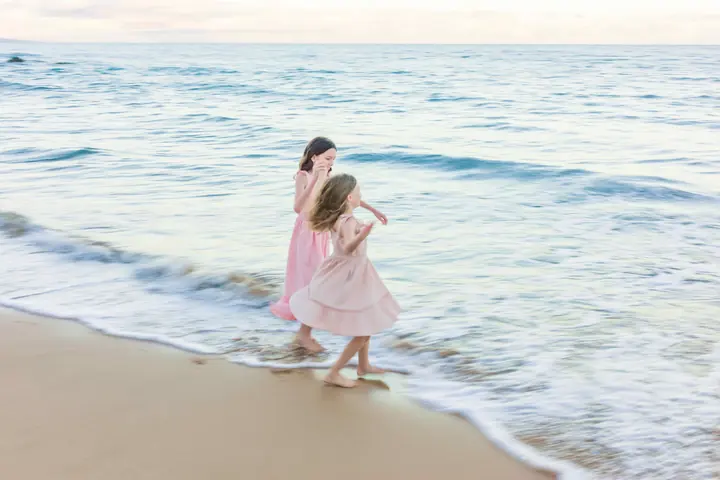
Where to park at Keawakapu Beach
Where to park, how early to arrive, and practical meeting notes for Keawakapu Beach in Wailea.
Read the guide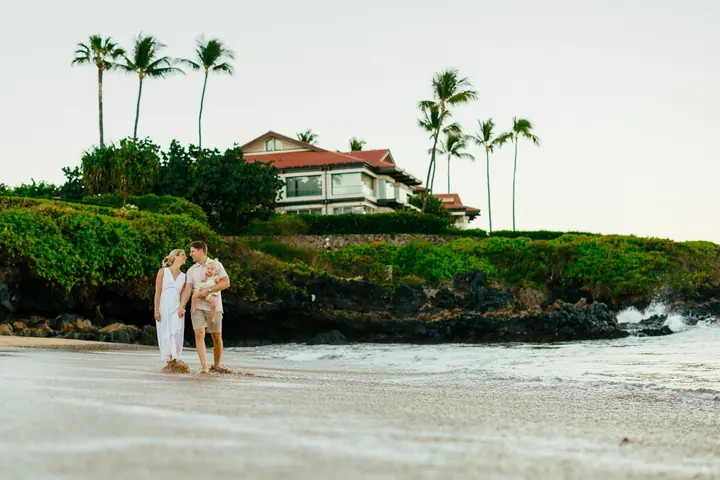
Where to park at Wailea Beach
The public parking lot, map links and meeting point for morning sessions at Wailea Beach, next to the Four Seasons Resort Maui.
Read the guide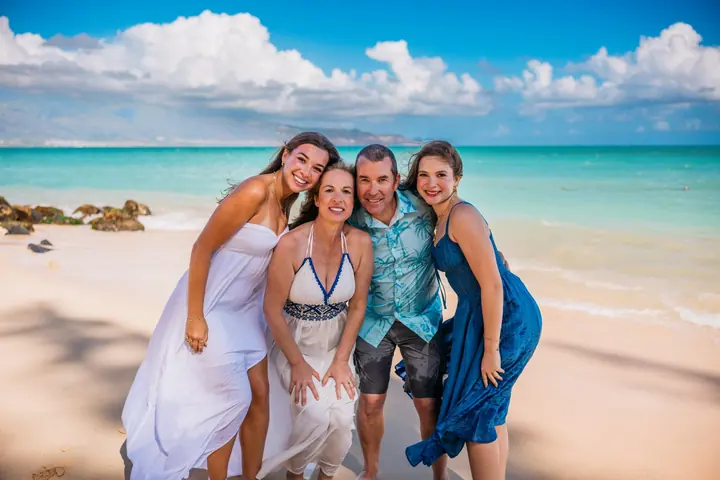
Where to park at Kanahā Beach
The required map, final entrance, Lifeguard Station 10B meeting point and restroom notes for your session.
Read the guide
Where to park at Maluaka Beach
The correct upper parking lot, walking path, map link, and meeting areas for portrait sessions and wedding ceremonies in Makena.
Read the guideProposals, weddings & big gatherings
How we plan the moments that only happen once.
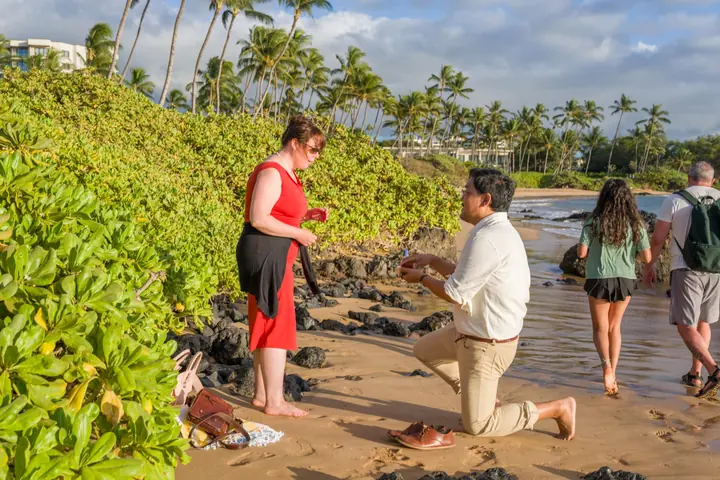
Why We Don’t Hide in the Bushes for Proposals
A real field lesson in why a carefully staged surprise creates better light, cleaner backgrounds, and a more dependable proposal photograph.
Read the guide
What a Maui beach wedding costs in 2027
What a Maui beach wedding costs in 2027: package prices compared, the marriage license, Hawaii tax, guest limits and what is included.
Read the guide
Our Choice for a Maui Wedding Officiant
Why we recommend Derick Sebastian, a licensed Maui officiant and ukulele artist, based on our own experience photographing his ceremonies.
Read the guide
Family Reunions & Legacy Portraits in Maui
When family gathers from around the world for a week on Maui, we capture the farewell dinner and a single portrait of everyone together — groups of 40+ welcome.
Read the guide
A Gentle Guide to a Maui Babymoon
Celebrate your growing family against the golden backdrop of Wailea and Makena beaches with our specialized maternity portrait sessions.
Read the guideStaying at a Wailea resort
Where we meet guests of each resort, and the beaches a short walk away.
Photography for Andaz Maui Guests
We photograph on Mokapu Beach in front of the resort every evening — a short walk from your room, all-inclusive, and booked direct with no concierge markup.
Read the guide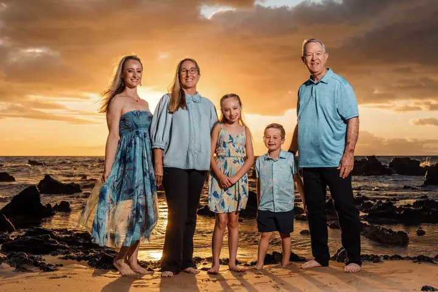
Photography for Grand Wailea Guests
We photograph near the resort at sunset — usually on a quieter beach a short walk up the coast, away from the crowds. All-inclusive and booked direct.
Read the guide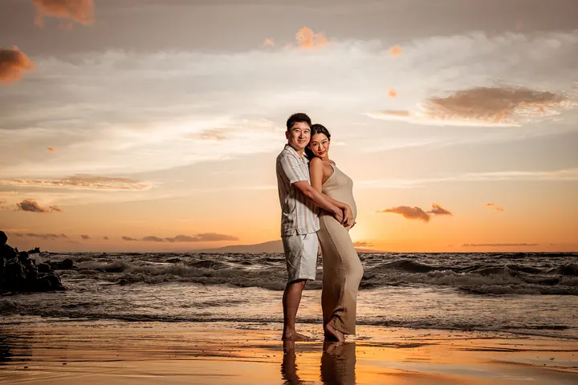
Photography for Four Seasons Maui Guests
We photograph near the resort at sunset — usually on a quieter beach a short walk from the crowds on Wailea Beach. All-inclusive and booked direct.
Read the guide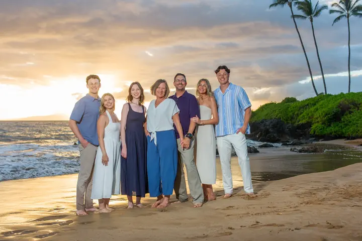
Photography for Fairmont Kea Lani Guests
We photograph on the quieter beaches near the Fairmont, including the Polo Beach stretch. All-inclusive and booked direct.
Read the guide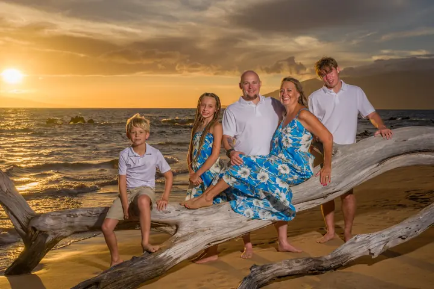
Photography for Wailea Beach Resort Guests
We photograph on the beautiful beaches a short walk from the resort, choosing the best light and least-crowded sand. All-inclusive and booked direct.
Read the guideThe craft: light, Leica & film
The art and engineering behind the photographs.
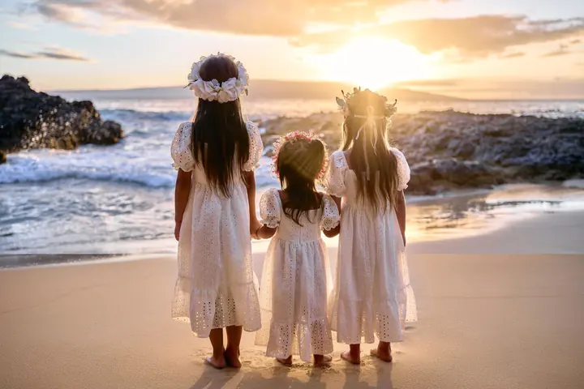
The APO Difference: the science of light
Learn how sunrise, sunset, clouds, ocean reflections, sand, humidity, and professional lighting influence color and skin tone.
Read the guideLeica M9 vs. Kodak Portra 160
Two Leica camera systems, the same Hawaiian light, and one deceptively difficult question: can your eyes distinguish CCD digital color from Kodak film?
Read the guide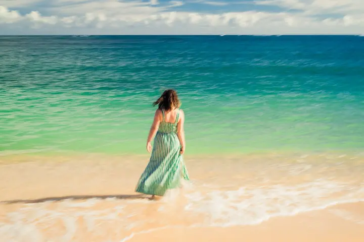
Impressionism Photography
A slow-shutter, in-camera technique inspired by Monet and Degas — soft, painterly motion captured on Maui's beaches, offered as an add-on to your session.
Read the guideThe Black & White Upgrade
A considered collection in monochrome—made for expression, shape, texture, and the moments that remain timeless after color fades from memory.
Read the guideThe Kodak Film Upgrade
Why real film remains a beautiful way to preserve a Maui family, couple, proposal or wedding session.
Read the guide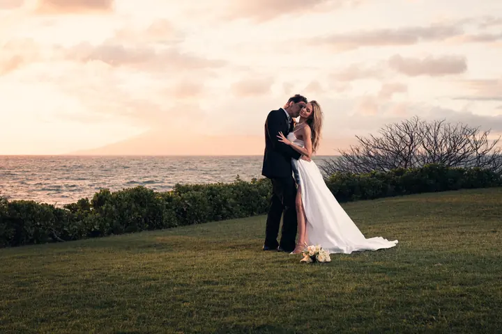
The Sixty-Four: Kodachrome editions
Fifteen frames hand-processed to the colors of Kodachrome, shot on the Leica M9 CCD. The story of the film, the sensor Kodak built the same year, and how to add it to your session.
Read the guideExploring Maui
Our honest notes on the island beyond the beach session.

Haleakalā: What to Know Before You Go
Sunrise reservations, summit cold, altitude, and closures — everything to know before driving up Haleakalā, plus our own trip to 10,023 feet.
Read the guide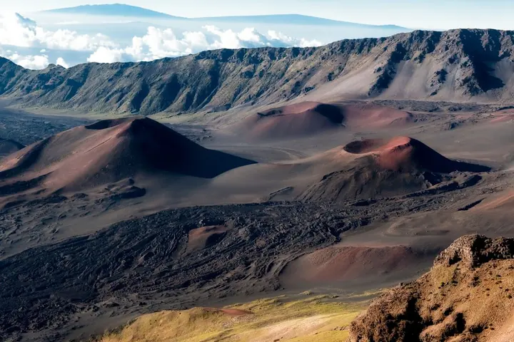
Haleakalā in Half a Day
Honest drive times, sunrise, late-morning and sunset options, entrance fees, and the stops worth making at the crater.
Read the guide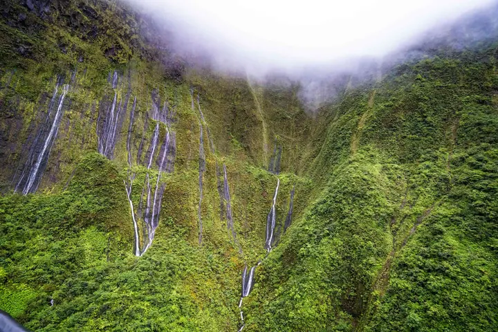
The Road to Hāna: What to Know Before You Go
Explore the rewards and risks of the legendary Divine Drive, featuring cascading waterfalls, lush rainforests, and essential travel preparation tips.
Read the guide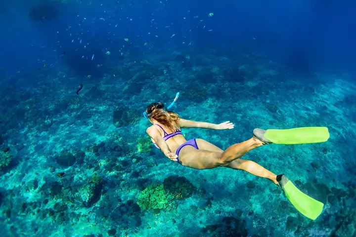
The Best Snorkeling Spots on Maui
Dive into Molokini Crater, Honolua Bay, Ahihi Kinau, and more. Discover vibrant coral gardens, sea turtles, and unforgettable underwater adventures.
Read the guide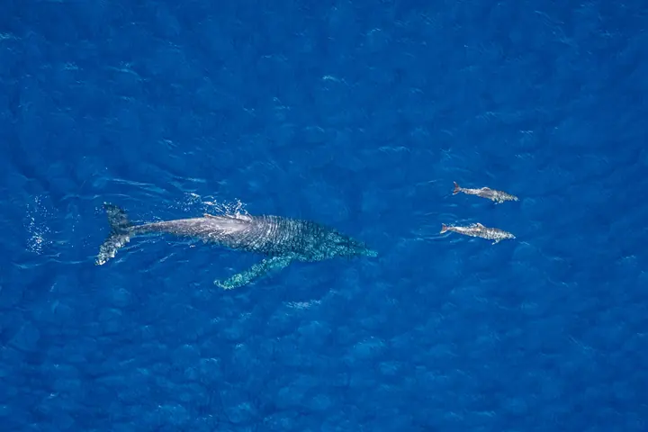
Whale Watching in Maui
When humpbacks are here, which boats and tours are worth booking from Maalaea, Lahaina and Makena, and where to watch from shore.
Read the guide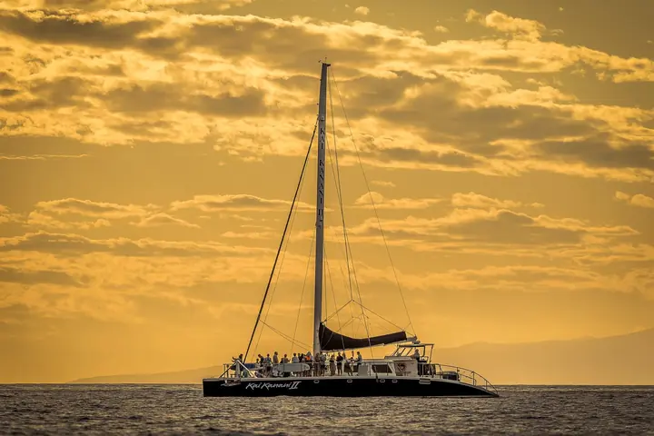
Maui Catamaran Tours: Choosing Your Day on the Water
Discover the best catamaran tours and maritime adventures in Maui, from snorkeling Molokini Crater and sunset sails along West Maui to seasonal whale watching.
Read the guide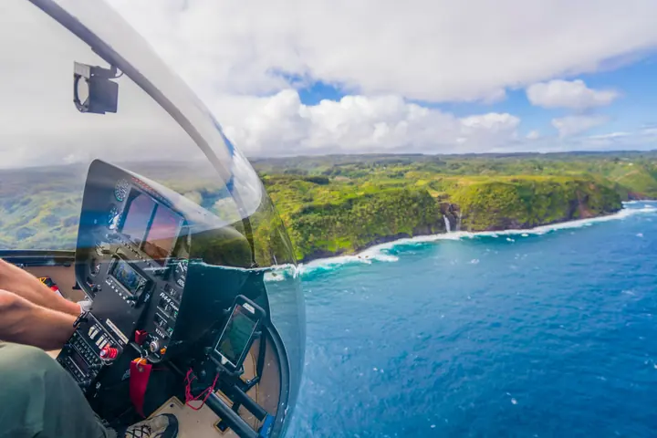
Maui Helicopter Tours: A Photographer’s View
Experience the sheer scale of the Valley Isle from above. Soar over towering sea cliffs, hidden waterfalls, and the lush depths of West Maui.
Read the guide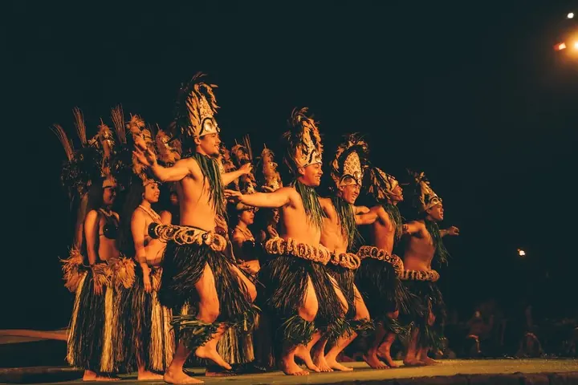
A Thoughtful Guide to Maui Lūʻau
Choose an evening of food, music, dance, and storytelling that feels welcoming, memorable, and connected to place.
Read the guide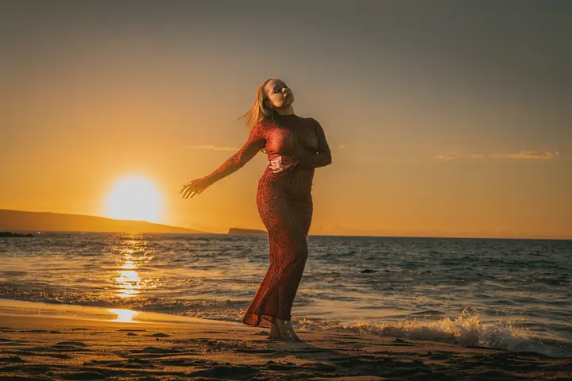
Maui Sunscreen: Protect Your Skin and the Reef
Navigate Hawaii's sunscreen regulations, choose approved mineral-based reef-safe formulas, and protect both your skin and delicate marine ecosystems.
Read the guideAlso for confirmed clients: The Private Posing Guide — natural movement, relaxed hands and flattering angles.
Photography at the intersection of Art and Engineering.
Art gives a portrait meaning.
Engineering gives the photographer the control to preserve that meaning under changing and sometimes difficult conditions.
The Maui Atlas brings those two disciplines together. Every article is written from direct experience and designed to help families make informed decisions while also contributing useful knowledge to photographers and anyone interested in the craft of portraiture.
The Maui Atlas will continue to grow as we document what thousands of Maui portrait sessions have taught us.
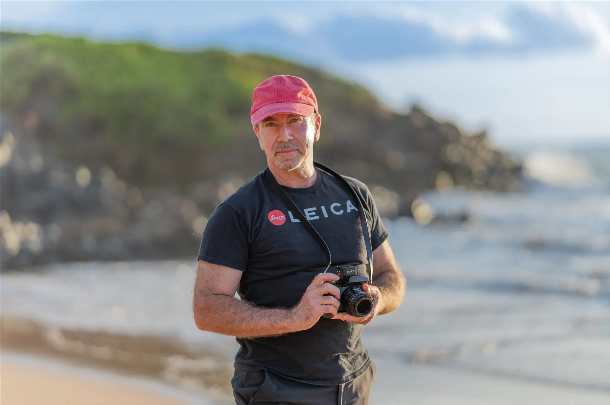
Knowledge gathered in Maui.
Made to be shared.
Return as the Maui Atlas grows—or explore the portrait experiences that made it possible.
View Sessions & Pricing